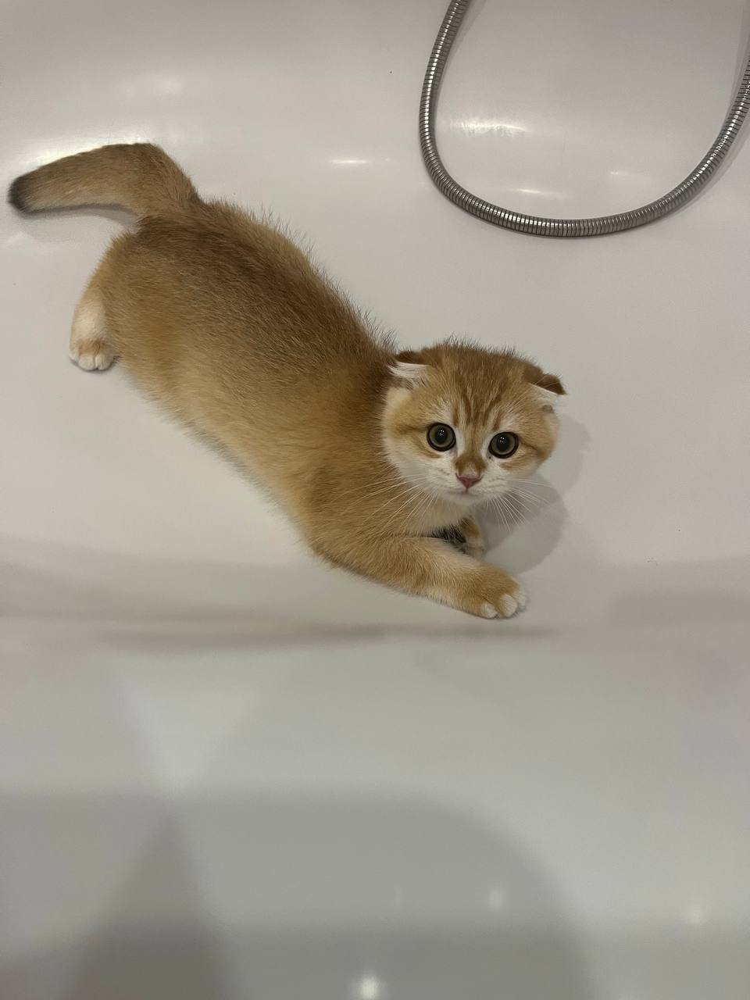

Всім привіт мене звати Владислав
Трішки про себе
Народився я в лихі девяності аж в 1999 році в селі
Княжичі те що біля Київа.
Моє село класне там є велика церква з золотими верхівками, місцевий
ганделик
та напевно гордість нашого села це розважально відпочивальний обьєкт
Княжий двір, який колись був дуже класним та популярним
серед мешканців села та не тільки.
Також в селі є школа в якій навчався я та вивчився там цілих 9 років
після чого вступив в броварський ліцей на спеціальність автослюсар
4-го розряду закінчів навчання там але по спеціальності так і не
працював
, більшисть часу пропрацював у сфері продажів ще перед війною
влаштувався на роботу до lifecell та досих пір працюю
там, тому якщо э питання по lifecell звертайтеся
Моя робота дозволяє займатися своїми справами в тому числі й
навчатися прямо на робочому місці,а так як за певних обставин я
залишився одним працівником на магазин та працюю в такому темпі
майже без вихідних півтора роки по 11 годин на день
то часу в мене для розвитку та навчання дуже багато
тому і було прийняте рішення змінити своє життя почати вивчати
верстку спочатку самостійно, а потім на цьому курсі щоб не працювати
без вихідних та 11 годин на день
-
Моя характеристика
- Стресостійкість
- Наполегливість
- Бажання досягати вершин та рухатися вперед
- Люблю свого кота
-
Ще трішки не цікавої інформації
- Улюблений колір жовтий
- Улюблений фільм Тихоокеанський рубіж
Ну і нарешті мій котик Марсік Марс Марсяо Марсель
Трішки про мого котика
- Народився 29 травня 2025 року
- Дуже грайливий та ручний котик
- М'якенький немов хмаринка
- Дуже полюбляє тигидикати на ніч та орати під дверима замість будильника
На цюму все надіюсь все зробив дякую за перегляд
Живи а працюй у вільний час